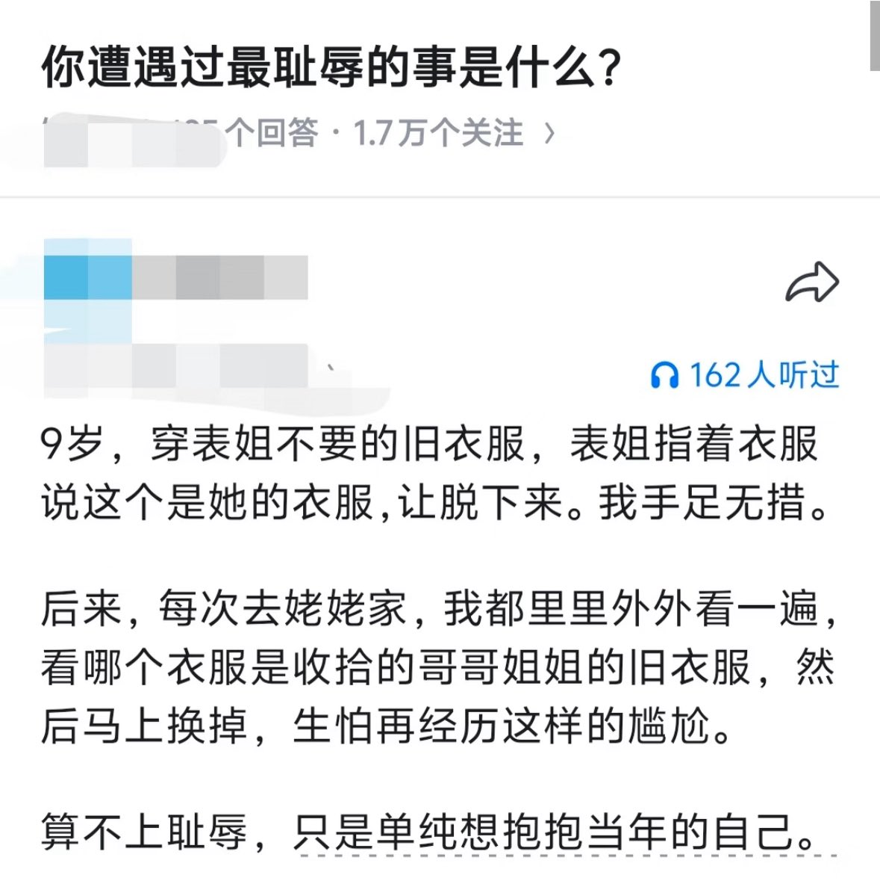

北雁冬翼（simone luxem）🏳️⚧️🏳️🌈🔬
@Simone_Luxem
啊…为什么这个是“羞耻”的事情…
作为家里最小的孩子，自己好像上初中前都能收到来自各个哥哥姐姐的各种穿小了的衣服的，而且自己也照穿不误的…
一直觉得是某种“照顾”才对的呀，把自己的衣服送给对方，无论是象征意义上的“与子同袍”还是现实上的使得对方省了衣服钱…只要洗干净还能穿的，都不算羞辱吧

Alexander
@duanhjlt
你遭遇过最耻辱的事是什么？ https://t.co/qlxVuLcNyy